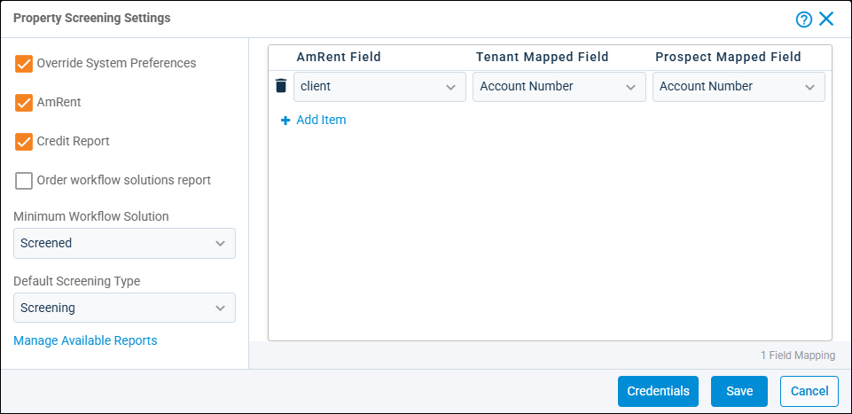

Source: https://rmxhelp.rentmanager.com/Topics/Express/CSH/Property-Screening-Settings.htm
Property Screening Settings (Pop-Up)
The Property Screening Settings pop-up allows you to override the default screening settings established in the system preferences for any property. This is necessary, for example, if you have multiple properties each using unique screening usernames and passwords and customized field mappings. Changes to screening settings for a property may include specifying which screening reports can be accessed, and altering tenant and prospect field mappings.
Related Preferences
Changing screening settings on a property overrides the options established in system preferences for only that property. Otherwise, the system-wide default options are used for any screenings at that property. For more information, refer to Screening Products Credentials (System Preferences) and Screening Settings (System Preferences)
Related Privileges
| Group | Privilege | Column |
|---|---|---|
| Properties/Units | Properties | View, Edit |
For more information, refer to Control User Access.
To manage a property's screening settings, do the following:
-
Go to
 arrow_forward Rental Info arrow_forward General arrow_forward Properties and select a property from the list.
arrow_forward Rental Info arrow_forward General arrow_forward Properties and select a property from the list.
The property's details page displays. -
On the action bar to the right, click
 arrow_forward Screening Settings.
arrow_forward Screening Settings.
-
On the left, select Override System Preferences.
Field Descriptions
The following fields display in the left section of the pop-up.
| Field | Description | |||||||
|---|---|---|---|---|---|---|---|---|
|
Default Screening Type |
The method that is used to screen prospects. This selection defaults to the type selected in system preferences. |
|||||||
|
||||||||
|
Minimum Workflow Solution |
The criteria required for a user to change the status of a prospect to a tenant. |
|||||||
|
||||||||
|
Order workflow solutions report |
Obtains a report that evaluates the data and then recommends approving or declining an application for this property based on the results of an applicant’s credit, criminal, and eviction history. Workflow solution criteria must be previously set up with AmRent. |
|||||||
|
Override System Preferences |
If checked, the screening options are unique to the property and can differ from the settings enabled in system preferences. Two vendors are available: AmRent and/or Credit Report (via TransUnion). If Credit Report is enabled, it may result in additional fees. Additionally, if you select Credit Report without having that option in your contract with AmRent, the report errors out and is aborted. |
Column Descriptions
Users that have permission to run screenings can, if necessary, modify the default field associations used by the screening report to search for data. In most cases, the default settings (first name, last name, social security number, birth date, street address, city, state, and zip) retrieves the equivalent information. However, if you need to look for something specific, you can customize a field mapping and save it to use as needed. The following columns are available in the right section of the pop-up.
| Column | Description |
|---|---|
|
AmRent Field |
The AmRent screening field to which tenant or prospect mapped fields are imported. |
|
Prospect Mapped Field |
The associated Rent Manager prospect field that provides the data for the mapped AmRent field. |
|
Tenant Mapped Field |
The associated Rent Manager tenant field that provides the data for the mapped AmRent field. |
Property Screening Reports
To view the available screening reports and the users who may generate those reports, click Manage Available Reports. These reports search additional data sources than those screenings that searched for a Credit-Only report and produce separate findings.
The reports listed on the Property Screening Reports pop-up depend on the reports you are contracted to use with AmRent. The following reports can be available:
| Report | Description |
|---|---|
|
Bundled Screening |
Returns contracted credit, criminal, rental record, and eviction information for the business. |
|
Collection Credit Report |
Returns contracted credit, criminal, and eviction information for the owner of the business who is providing a personal guarantee. |
|
Commercial Screening |
Returns contracted credit information for companies using in-house collections for their applicants. |
|
Credit Only |
Return credit data without formulating a recommendation (Workflow Solution). |
|
Criminal Only |
Returns criminal data (beyond criminal records from credit reports) without formulating a recommendation (Workflow Solution). |
|
Workflow Solutions, Credit Only |
Returns and evaluates credit data (typically for a guarantor not residing in the property) and displays a recommendation to approve or decline an application based on the criteria you have set up with AmRent. |
|
Workflow Solutions, Criminal Only |
Returns and evaluates criminal data (beyond criminal records from credit reports) and displays a recommendation (Workflow Solution) to approve or decline an application based on the criteria you have set up with AmRent. |
Property Credentials
By default, all properties use the AmRent credentials established in system preferences. If you have separate AmRent accounts for your properties, you need to enter those unique credentials for each property by doing the following:
-
At the bottom of the pop-up, click Credentials.
The AmRent Credentials pop-up displays. -
Select Override System Preferences.
-
Enter the AmRent Username and Password for the property's account.
-
To verify that these credentials are correct, click Test Connection. If you receive a connection error message, reenter your credentials or contact AmRent for assistance.
-
Click Save.
The property's AmRent credentials are established.